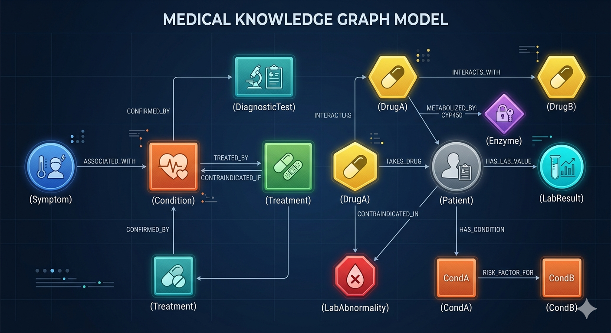
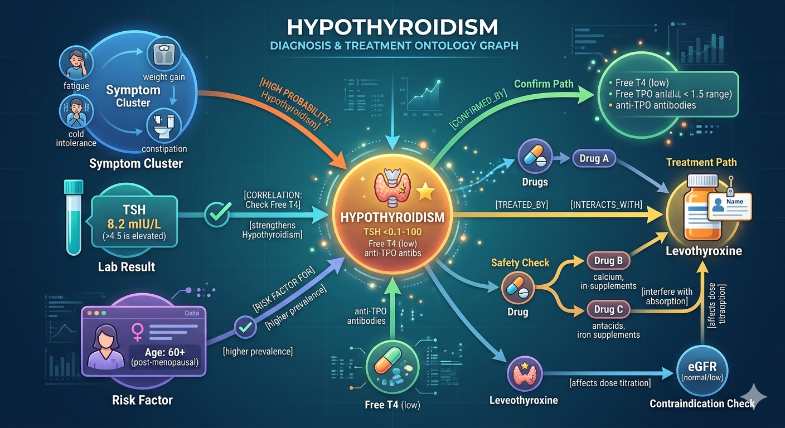

This is Part 3 of the RAG Enterprise Series. It assumes familiarity with the four RAG levels. Start with Part 1 if you haven't already.
Healthcare is the domain where RAG failure modes stop being engineering problems and start being patient safety problems. The hallucination tolerance is zero. The regulatory surface is the widest of any domain covered in this series. This post works through what that means at each retrieval level.
3. Domain 2 — Hospital Management Systems
3.1 Domain Characteristics and Challenges
Healthcare is the highest-stakes LLM application domain. The failure modes are not user dissatisfaction — they are patient harm. This imposes constraints that no other domain shares:
Regulatory landscape:
- HIPAA (US), PHIPA (Ontario/Canada), GDPR Article 9 (EU) — all impose strict controls on PHI (Protected Health Information)
- FDA oversight of clinical decision support software (CDS) — certain AI-assisted diagnosis tools require 510(k) clearance
- OSFI B-10 equivalent in healthcare: provincial health ministries impose data residency requirements
Domain challenges:
| Challenge | Why It's Critical |
|---|---|
| Clinical terminology precision | "Hypertension" and "hypertensive crisis" are semantically close but clinically opposite in urgency |
| Comorbidity reasoning | A treatment safe for condition A may be contraindicated by condition B |
| Hallucination tolerance: zero | A fabricated drug interaction can kill a patient |
| Data heterogeneity | Imaging (DICOM), lab results (HL7 FHIR), clinical notes (free text), vitals (time-series) |
| Temporal reasoning | "Patient's creatinine has been trending up over the last 3 weeks" is a time-series query |
| EHR fragmentation | Epic, Cerner, MEDITECH all have different schemas; patient records span institutions |
3.2 Level 1 — Vanilla RAG
Use case: Clinical protocol lookup and staff training Q&A.
Example: "What is the first-line antibiotic for community-acquired pneumonia in a non-ICU adult patient?"
Implementation:
Real-world deployments: Epic's Cognitive Computing search, Nuance DAX (ambient clinical documentation), AWS HealthLake with simple semantic search.
What L1 handles well:
- Static clinical guideline lookup (antibiotic selection, vaccination schedules)
- Staff policy Q&A (shift protocols, escalation procedures)
- Patient education content (pre-procedure instructions, discharge summaries)
Where it catastrophically breaks:
- "Is lisinopril safe for this patient?" requires the patient's chart (eGFR, potassium level, current medications, pregnancy status) — a vanilla RAG cannot retrieve and synthesize patient-specific context
- Hallucination risk: if the retrieved guideline is outdated, the LLM may confidently produce an incorrect dosage recommendation
3.3 Level 2 — Hybrid RAG
Use case: Drug interaction checking, differential diagnosis support, formulary compliance.
Why BM25 is non-negotiable in healthcare:
Drug names, ICD-10 codes, NDC codes, SNOMED CT identifiers must match exactly. Dense vector search on "metformin" may retrieve semantically similar text about "biguanides" (the drug class) or "oral hypoglycemics" — which may omit metformin-specific contraindications.
Query: "Interaction between warfarin and naproxen"
Dense: Retrieves docs about anticoagulant drug classes and NSAIDs → broad context
BM25: Exact match on "warfarin" AND "naproxen" → specific interaction sheets
Fusion: Both pathways merged → cross-encoder reranker prioritizes specificity
Result: Specific drug-drug interaction warning + mechanism + clinical management
Real-world example: IBM Micromedex (drug interaction database) uses hybrid search. Epic's drug interaction checking (DrugPoint) is pure structured lookup — a production system would wrap this with semantic retrieval for unstructured clinical notes.
SNOMED CT, RxNorm, ICD-11 as sparse vocabularies: These controlled medical vocabularies become BM25-indexed fields. A query for "acute MI" should match "acute myocardial infarction" (ICD-10: I21.x) without the model needing to learn the mapping semantically. The code is the exact match anchor; the description is the semantic field.
3.4 Level 3 — GraphRAG
Use case: Clinical decision support for complex cases — differential diagnosis, treatment planning under multiple comorbidities, regulatory compliance for clinical trial eligibility.
Medical knowledge ontology:

Query example:
"Patient is a 72-year-old female presenting with fatigue, weight gain, cold intolerance, constipation, brittle nails, and TSH of 8.2 mIU/L. What are the differential diagnoses and recommended next steps?"
Graph traversal:
1. Symptom cluster: fatigue + weight gain + cold intolerance + constipation → [HIGH PROBABILITY: Hypothyroidism]
2. Lab correlation: TSH 8.2 mIU/L (>4.5 is elevated) → strengthens Hypothyroidism; check Free T4
3. Age + gender → Risk factor edge: post-menopausal female → higher prevalence of autoimmune thyroid disease
4. Confirm path: Hypothyroidism → [CONFIRMED_BY] → Free T4 (low), anti-TPO antibodies
5. Treatment path: Hypothyroidism → [TREATED_BY] → levothyroxine
6. Safety check: Does patient take any drugs? Drug → [INTERACTS_WITH] → levothyroxine? (calcium, antacids, iron supplements interfere with absorption)
7. Contraindication check: Is eGFR normal? (affects dose titration)

Real-world systems:
- Isabel DDx — differential diagnosis knowledge graph used in 7,000+ hospitals
- Aetion Evidence Platform — real-world evidence graph for regulatory submissions
- Google's Medical Knowledge Graph — powers Google Health Search
- Microsoft's BiomedNLP — SNOMED-grounded clinical reasoning
Clinical trial eligibility (L3 killer app):
"Identify patients in Ward 4B who are eligible for the Phase 3 DAPA-CKD trial."
Eligibility criteria (inclusion + exclusion) are formalized as graph paths:
Patient → [HAS_CONDITION: T2DM] AND [HAS_CONDITION: CKD Stage 3-4]
AND [HAS_LAB: eGFR 25-75] AND [HAS_LAB: UACR ≥ 200]
AND NOT [TAKES_DRUG: SGLT2_inhibitor]
AND NOT [HAS_CONDITION: Type1_Diabetes]
AND [AGE ≥ 18]
No L1 or L2 system can execute this query — it requires structured graph traversal against structured patient data.
3.5 Level 4 — Agentic RAG
Use case: Fall risk stratification, sepsis early warning, discharge planning, complex case consultation.
Example — Fall risk assessment:
"Which patients on Ward 3B are at highest fall risk today based on their current medications, recent lab values, and mobility assessments?"
Agent loop:
Turn 1: Query patient roster for Ward 3B → 18 patients
Turn 2: For each patient: retrieve current medication list
Turn 3: Apply sedation-risk scoring: opioids, benzodiazepines, antihypertensives → flag high-risk medications
Turn 4: Retrieve last 48h lab values → hyponatremia (Na < 135) and hypoglycemia increase fall risk
Turn 5: Query nursing mobility assessment records (last 24h)
Turn 6: Reflect: Do I have all three data types for all patients? → 3 patients missing mobility assessment → flag as "incomplete data"
Turn 7: Synthesize risk scores → rank by composite score
Turn 8: Generate output: top 5 patients + risk rationale + recommended interventions per patient
Real-world systems:
- Sepsis Watch (Duke Health) — ML + multi-source agentic retrieval for sepsis prediction
- Epic's Deterioration Index — aggregates vitals, labs, nursing notes for deterioration warning
- Ambient AI — Abridge, Nuance DAX Copilot — multi-turn agentic documentation assistants
3.6 Supporting Elements — Healthcare Domain
Memory:
Long-term patient memory:
- Summarized clinical history (problem list, surgical history, allergy list)
- Medication reconciliation across encounters
- Preference and care directive records
- Specialist consultation history
Temporal/episodic memory:
- "3 days ago, creatinine was 1.2. Today it is 1.8. Yesterday it was 1.5." (trending)
- Vital sign trajectories within an encounter
Session memory:
- Running clinical reasoning chain in the context window
- Working differential diagnoses with supporting/refuting evidence per dx
Prompt Engineering:
Clinical system prompt:
"You are a clinical decision support assistant. You do not replace physician judgment.
You surface evidence; you do not prescribe.
Patient context: [INJECT_STRUCTURED_PATIENT_SUMMARY: problem list, medications, allergies, recent labs]
Guidelines context: [INJECT_RETRIEVED_GUIDELINES]
Regulatory context: [INJECT_INSTITUTIONAL_FORMULARY_CONSTRAINTS]
Confidentiality: This response is for clinical team use only. Do not include PHI in logs.
Hedging requirement: All recommendations must include confidence level and evidence source."
Chain-of-thought mandate:
"Before reaching a recommendation, explicitly list:
(1) Findings supporting the conclusion
(2) Findings arguing against it
(3) What additional test would reduce uncertainty most
(4) Any contraindications in this patient's profile"
Fine-Tuning:
- BioClinicalBERT / BioGPT fine-tuning: Pre-trained on PubMed + clinical notes; fine-tune on institutional clinical reasoning examples
- Instruction fine-tuning for SOAP notes: The model learns to generate Subjective/Objective/Assessment/Plan documentation format
- Behavioral fine-tuning: Teach the model to always hedge, always cite, never speculate beyond evidence — harder than knowledge injection
- Tool: Axolotl for fine-tuning; RLHF with physician feedback for alignment
Critical constraint: Healthcare fine-tuning must be done on de-identified data only (Safe Harbor or Expert Determination under HIPAA). The fine-tuning dataset is often harder to obtain than the model training itself.
Part of the RAG Enterprise Series. Next: RAG in Wealth Management — Fiduciary Constraints and Retrieval Design.